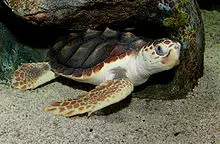

In Sri Lanka, there are five species of turtles that are commonly found. Here are their names:
Olive Ridley Turtle (Lepidochelys olivacea)
Green Turtle (Chelonia mydas)
Loggerhead Turtle (Caretta caretta)
Hawksbill Turtle (Eretmochelys imbricata)
Leatherback Turtle (Dermochelys coriacea)
These turtles are known for their nesting sites along the coastal areas of Sri Lanka, and efforts are made to protect and conserve their populations.
Olive Ridley Turtle
The Olive Ridley Turtle (Lepidochelys olivacea) is a species of sea turtle known for its unique olive-colored carapace, which is heart-shaped and relatively small compared to other sea turtle species. They are found in warm waters, including the coastal regions of Sri Lanka. Olive Ridley Turtles are known for their mass nesting events called "arribadas," where thousands of females come ashore simultaneously to lay their eggs.
These turtles have a varied diet, consisting mainly of jellyfish, shrimp, and other invertebrates. They have a distinctive head with a slightly hooked beak, which helps them catch their prey. Olive Ridley Turtles are also known for their ability to dive to great depths, up to 150 meters, in search of food. They play an important role in maintaining the health of marine ecosystems by controlling jellyfish populations.
Olive Ridley Turtles face numerous threats, including habitat degradation, pollution, and accidental capture in fishing nets. Conservation efforts are crucial to protect these turtles and their nesting sites. Measures such as the establishment of protected areas, implementing fishing practices that minimize bycatch, and raising awareness about the importance of sea turtle conservation are essential for the long-term survival of the Olive Ridley Turtle in Sri Lanka and around the world.
Green Turtle
The Green Turtle (Chelonia mydas) is a remarkable species of sea turtle known for its large size, weighing up to 200 kilograms, and its characteristic green-colored fat tissue, which gives it its name. They are found in tropical and subtropical waters worldwide, including the coastal areas of Sri Lanka. Green Turtles have a distinctive heart-shaped carapace that can reach lengths of up to 1.5 meters.
Green Turtles are primarily herbivorous and have a diet consisting mainly of seagrasses and algae. They play a vital role in marine ecosystems as they help maintain the health of seagrass beds by grazing on them. Green Turtles are known for their long migrations, with females returning to their natal beaches to lay their eggs. They exhibit a unique nesting behavior, where they dig nests on sandy beaches and lay clutches of around 100-200 eggs.
Despite being listed as an endangered species, Green Turtles face numerous threats, including habitat loss, poaching, entanglement in fishing gear, and pollution. Conservation efforts focus on protecting nesting beaches, implementing sustainable fishing practices, and raising awareness about the importance of preserving these majestic creatures. With concerted conservation measures, it is possible to ensure the survival and recovery of the Green Turtle population in Sri Lanka and beyond.
The Loggerhead Turtle

The Loggerhead Turtle (Caretta caretta) is a fascinating species of sea turtle known for its large head and strong jaw, which gives it its name. They are widely distributed in the world's oceans, including the coastal regions of Sri Lanka. Loggerhead Turtles have a reddish-brown carapace that can reach lengths of up to 1.2 meters, making them one of the larger sea turtle species.
Loggerhead Turtles have a diverse diet, consisting of various marine invertebrates such as crabs, jellyfish, and mollusks. They are also known to consume seagrass and algae on occasion. These turtles undertake long-distance migrations and have an impressive ability to navigate using the Earth's magnetic field. Loggerhead Turtles nest on sandy beaches, and females can lay multiple clutches of around 100-120 eggs during a nesting season.
Loggerhead Turtles face several threats to their survival, including habitat degradation, pollution, climate change, and accidental capture in fishing gear. Conservation efforts focus on protecting nesting beaches, implementing measures to reduce bycatch in fisheries, and raising awareness about the importance of sea turtle conservation. With ongoing conservation initiatives, it is possible to help secure the future of Loggerhead Turtles in Sri Lanka and worldwide.
The Hawksbill Turtle
The Hawksbill Turtle (Eretmochelys imbricata) is a magnificent sea turtle species known for its unique and beautiful shell, which is highly valued for its intricate patterns. They are found in warm tropical waters, including the coastal areas of Sri Lanka. Hawksbill Turtles have a distinctively narrow and pointed beak, which is well adapted for reaching into crevices and feeding on sponges, sea anemones, and other invertebrates. This specialized diet gives them their name.
Hawksbill Turtles play a crucial role in coral reef ecosystems by helping to maintain the health of coral reefs. They feed on sponges that often overgrow and smother corals, promoting the growth and diversity of coral species. These turtles are also known for their nesting behavior, with females returning to their natal beaches to lay their eggs. Hawksbill Turtle nests contain around 100-150 eggs, and the hatchlings emerge after a couple of months and make their way to the sea.
Hawksbill Turtles face numerous threats to their survival, primarily due to human activities. Illegal hunting for their shells, habitat loss, pollution, and accidental entanglement in fishing gear are some of the significant challenges they face. Conservation efforts focus on protecting nesting beaches, implementing strict regulations against shell trade, and raising awareness about the importance of preserving Hawksbill Turtles and their critical role in maintaining the health of coral reef ecosystems.
The Leatherback Turtle
The Leatherback Turtle (Dermochelys coriacea) is a remarkable and unique species of sea turtle known for its distinct characteristics. It is the largest of all living turtles and can reach impressive lengths of up to 2 meters. Unlike other sea turtles, the Leatherback Turtle lacks a hard, bony shell. Instead, it possesses a flexible and leathery carapace, hence its name. These turtles have a dark-colored body with white or pink spots scattered across their skin.
Despite their impressive size and endurance, Leatherback Turtles face numerous threats. These include habitat degradation, pollution, climate change, entanglement in fishing gear, and ingestion of marine debris. Conservation efforts aim to protect nesting sites, promote sustainable fishing practices, and reduce human impacts on their habitats. Preserving the Leatherback Turtle population is vital to maintaining the biodiversity and ecological balance of the world's oceans.